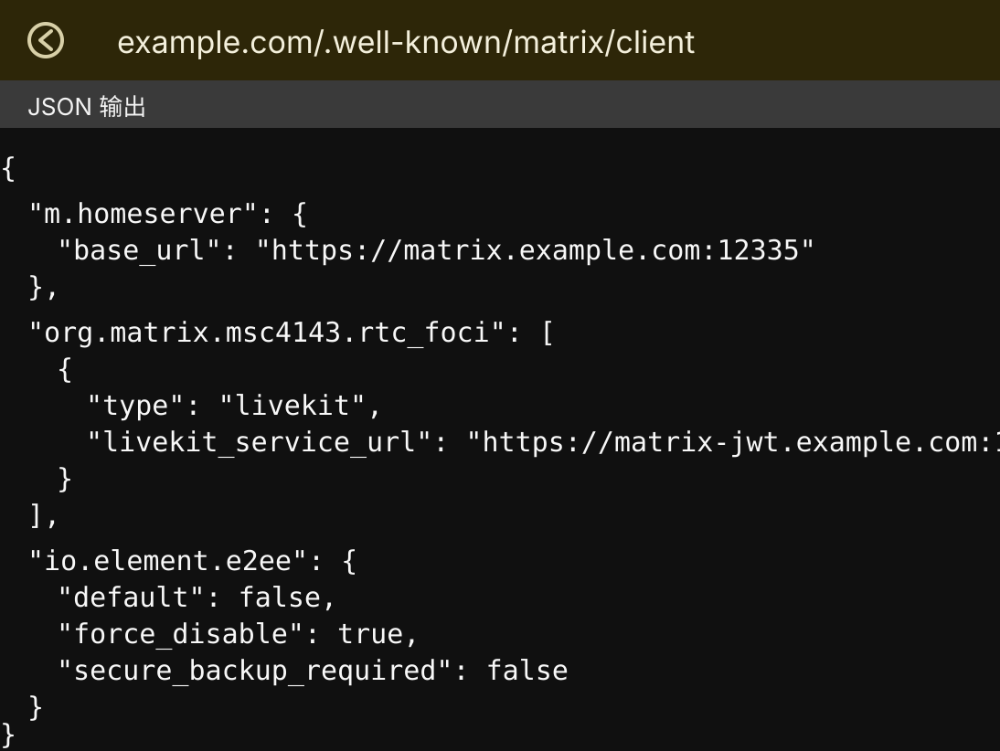

Matrix 客户端在登录和发现 Homeserver 时，会优先访问服务器名下面的标准 well-known 地址：
https://example.com/.well-known/matrix/client这个入口默认就是 HTTPS 443。即使 Synapse 实际监听在非标准端口，例如：
https://matrix.example.com:12335客户端发现配置时仍然会先找 https://example.com/.well-known/matrix/client。所以没有本机 443，或者 443 不能直接给 Matrix 使用时，可以让 Cloudflare Worker 在 Cloudflare 边缘承接这个标准入口，再把真实 Homeserver 地址公告给客户端。
本文同时记录一个常见需求：通过 /.well-known/matrix/client 给 Element 客户端下发 E2EE 策略，让支持该配置的 Element 客户端默认不创建加密房间，并隐藏或禁用加密入口。

能解决什么
这套方案解决的是两个问题：
- 服务器本机没有标准 443，Synapse 只能放在自定义 HTTPS 端口。
- 希望 Element 客户端读取 well-known 后，默认不启用端到端加密。
最终访问链路是：
Element 客户端
-> https://example.com/.well-known/matrix/client
-> Cloudflare Worker 返回 JSON
-> m.homeserver.base_url 指向 https://matrix.example.com:12335如果还部署了 MatrixRTC / LiveKit，也可以在同一个 JSON 里继续公告 JWT 服务地址。
不能解决什么
io.element.e2ee 是 Element 客户端配置，不是 Matrix 协议层面的服务器强制规则。
它的效果取决于客户端是否读取并遵守这个字段：
| 客户端 | 预期效果 |
|---|---|
| Element Web / Desktop | 通常最容易生效 |
| Element Android / iOS | 需要按具体版本测试 |
| Element X | 需要按具体版本测试 |
| 其它 Matrix 客户端 | 可能完全忽略 |
| 自定义客户端或脚本 | 仍可能直接发送 m.room.encryption 事件 |
所以这不是“服务端铁闸”。它更适合用来做默认行为控制：让普通用户的新房间默认不加密，减少后续媒体清理、密钥恢复、历史设备验证带来的复杂问题。
如果要求服务端绝对拒绝所有加密事件，就需要 Synapse 模块、反向代理过滤或自定义客户端。但这类方案容易影响客户端建房、邀请、升级房间等流程，兼容性风险更高。
Cloudflare DNS
假设服务器名是：
example.com真实 Synapse 登录地址是：
https://matrix.example.com:12335需要保证：
| 名称 | 用途 | 建议 |
|---|---|---|
example.com |
只承接 /.well-known/matrix/* |
橙云，交给 Worker 路由 |
matrix.example.com |
Synapse HTTPS 入口 | 视部署方式决定，通常 DNS only 加自定义端口 |
matrix-jwt.example.com |
LiveKit JWT 服务 | 如果使用 MatrixRTC / LiveKit 才需要 |
Worker 只处理 example.com 下的 well-known，不需要代理 Synapse 的真实流量。
Worker 代码
在 Cloudflare Dashboard 进入 Workers 和 Pages，创建一个 Worker，例如命名为：
matrix-well-known然后把 Worker 代码改成下面这样。下面这份是按现有 work.js 结构整理后的完整版本，只是在 /.well-known/matrix/client 返回里补上了 io.element.e2ee。示例里的域名全部替换成自己的域名和端口。
const homeserverUrl = "https://matrix.example.com:12335";
const jwtUrl = "https://matrix-jwt.example.com:12336";
const federationServer = "matrix.example.com:12335";
function json(data) {
return new Response(JSON.stringify(data), {
headers: {
"content-type": "application/json; charset=utf-8",
"access-control-allow-origin": "*",
"access-control-allow-methods": "GET, OPTIONS",
"cache-control": "no-store, no-cache, must-revalidate, proxy-revalidate, max-age=0",
"pragma": "no-cache",
"expires": "0"
}
});
}
export default {
async fetch(request) {
const url = new URL(request.url);
if (request.method === "OPTIONS") {
return new Response(null, {
status: 204,
headers: {
"access-control-allow-origin": "*",
"access-control-allow-methods": "GET, OPTIONS"
}
});
}
if (url.pathname === "/.well-known/matrix/client") {
return json({
"m.homeserver": {
"base_url": homeserverUrl
},
"org.matrix.msc4143.rtc_foci": [
{
"type": "livekit",
"livekit_service_url": jwtUrl
}
],
"io.element.rtc": {
"livekit": {
"service_url": jwtUrl
}
},
"io.element.e2ee": {
"default": false,
"force_disable": true,
"secure_backup_required": false
}
});
}
if (url.pathname === "/.well-known/matrix/server") {
return json({
"m.server": federationServer
});
}
return new Response("Not Found", { status: 404 });
}
};实际使用时，通常只需要改最上面的三行常量：
const homeserverUrl = "https://matrix.example.com:12335";
const jwtUrl = "https://matrix-jwt.example.com:12336";
const federationServer = "matrix.example.com:12335";把 matrix.example.com、matrix-jwt.example.com 和端口替换成自己的真实地址即可。后面的 m.homeserver、io.element.e2ee、org.matrix.msc4143.rtc_foci 这些字段名不要改，客户端识别的就是这些固定字段。
如果没有部署 LiveKit，可以删除 jwtUrl、org.matrix.msc4143.rtc_foci 和 io.element.rtc 相关内容，只保留 m.homeserver 与 io.element.e2ee。
只保留登录与禁用加密的精简版
不使用 LiveKit 时，精简版如下：
const homeserverUrl = "https://matrix.example.com:12335";
const federationServer = "matrix.example.com:12335";
function json(data) {
return new Response(JSON.stringify(data, null, 2), {
headers: {
"content-type": "application/json; charset=utf-8",
"access-control-allow-origin": "*",
"access-control-allow-methods": "GET, OPTIONS",
"cache-control": "no-store, no-cache, must-revalidate, proxy-revalidate, max-age=0",
"pragma": "no-cache",
"expires": "0"
}
});
}
export default {
async fetch(request) {
const url = new URL(request.url);
if (request.method === "OPTIONS") {
return new Response(null, {
status: 204,
headers: {
"access-control-allow-origin": "*",
"access-control-allow-methods": "GET, OPTIONS"
}
});
}
if (url.pathname === "/.well-known/matrix/client") {
return json({
"m.homeserver": {
"base_url": homeserverUrl
},
"io.element.e2ee": {
"default": false,
"force_disable": true,
"secure_backup_required": false
}
});
}
if (url.pathname === "/.well-known/matrix/server") {
return json({
"m.server": federationServer
});
}
return new Response("Not Found", { status: 404 });
}
};Worker 路由
Worker 代码保存后，在 Cloudflare 当前站点里添加路由：
example.com/.well-known/matrix/*有些界面会要求写完整 URL，也可以写成：
https://example.com/.well-known/matrix/*关键点是：客户端访问的必须是标准 443 入口：
https://example.com/.well-known/matrix/client不要让用户手动访问：
https://example.com:12335/.well-known/matrix/client12335 是真实 Synapse 服务端口，不是 well-known 的发现入口。
验证返回内容
浏览器打开：
https://example.com/.well-known/matrix/client应该能看到类似返回：
{
"m.homeserver": {
"base_url": "https://matrix.example.com:12335"
},
"org.matrix.msc4143.rtc_foci": [
{
"type": "livekit",
"livekit_service_url": "https://matrix-jwt.example.com:12336"
}
],
"io.element.rtc": {
"livekit": {
"service_url": "https://matrix-jwt.example.com:12336"
}
},
"io.element.e2ee": {
"default": false,
"force_disable": true,
"secure_backup_required": false
}
}也可以用命令检查：
curl -i https://example.com/.well-known/matrix/client重点看四件事：
- HTTP 状态码是
200。 - 有
access-control-allow-origin: *。 m.homeserver.base_url指向真实 Synapse 地址。- 存在
io.element.e2ee.force_disable: true。
如果 /.well-known/matrix/server 也由 Worker 返回，可以继续检查：
curl -i https://example.com/.well-known/matrix/server预期内容类似：
{
"m.server": "matrix.example.com:12335"
}Element 客户端测试
Worker 返回正确后，建议按这个顺序测试：
- 完全退出 Element。
- 清除客户端缓存，或者换一个干净浏览器配置。
- 重新登录
example.com这个服务器名。 - 添加好友，让客户端自动创建私聊房间。
- 新建群聊房间。
- 检查新房间是否默认未加密。
- 检查设置里是否还能手动开启加密。
如果客户端已经登录过，它可能缓存了 well-known 结果。只刷新 Worker 代码不一定马上影响现有会话，测试时最好重新登录。
和 Synapse 配置的关系
Synapse 的 homeserver.yaml 里，public_baseurl 仍然应该指向真实客户端访问地址，例如：
public_baseurl: "https://matrix.example.com:12335/"如果你希望新建房间默认不加密，还可以在 Synapse 配置里明确关闭服务端默认加密策略：
encryption_enabled_by_default_for_room_type: off这只是默认值，不是强制禁止。真正的客户端侧提示和入口控制，仍然来自 Worker 返回的：
"io.element.e2ee": {
"default": false,
"force_disable": true,
"secure_backup_required": false
}常见问题
为什么必须走 443
Matrix 客户端发现服务器配置时，会访问服务器名的标准 HTTPS well-known 地址。也就是：
https://example.com/.well-known/matrix/client这里没有端口时就是 443。很多客户端不会去猜 12335 这种自定义端口，所以需要 Cloudflare Worker、Nginx、Caddy 或其它标准 443 服务帮它返回 JSON。
Synapse 还需要监听 443 吗
不需要。Synapse 可以继续放在：
https://matrix.example.com:12335只要 Worker 返回的 m.homeserver.base_url 正确，客户端就会根据公告地址去连接真实 Synapse。
这样能彻底禁止加密房间吗
不能彻底禁止。它是 Element 客户端配置，不是 Synapse 服务端强制拒绝。
这套方式的目标是让常规 Element 用户的默认体验变成“不加密”，并尽量隐藏或禁用加密入口。对于不遵守 Element 配置的客户端，仍然可能创建加密房间。
为什么不继续用 Synapse 模块强制禁止
Synapse 模块可以更强硬，但客户端兼容性更差。部分 Element 版本在建房、邀请、添加好友时会卡住或报错，因为客户端以为自己可以发加密事件，服务端却直接拒绝。
Worker well-known 的方式更温和，改动也更容易回滚。
已经登录的客户端为什么没变化
客户端可能缓存了 well-known。建议退出重登，或者清理客户端数据后再测。
媒体清理和这个配置有什么关系
如果房间不加密，服务端能更清楚地识别媒体类型和消息行为，后续做媒体清理、过期提醒、问题排查会更稳。
如果房间已经加密，服务端只能看到加密事件和媒体引用，客户端在媒体文件被清理后再次打开，仍可能出现比较生硬的报错提示。这也是很多自建 Matrix 服务器希望默认关闭 E2EE 的原因之一。
推荐落地方式
生产环境里建议按这个顺序做：
- 先用 Cloudflare Worker 返回标准 443 的
/.well-known/matrix/client。 - 在 Worker JSON 里加入
io.element.e2ee。 - Synapse 保持简单配置，不加载强制禁止加密模块。
- 用 Element Web、Element Desktop、Element Android、Element X 分别测试。
- 接受少数客户端不遵守该配置的边界，不再用服务端硬拦截破坏兼容性。
这不是最强硬的方案，但通常是自建 Matrix 里更稳、更容易维护的一条路。